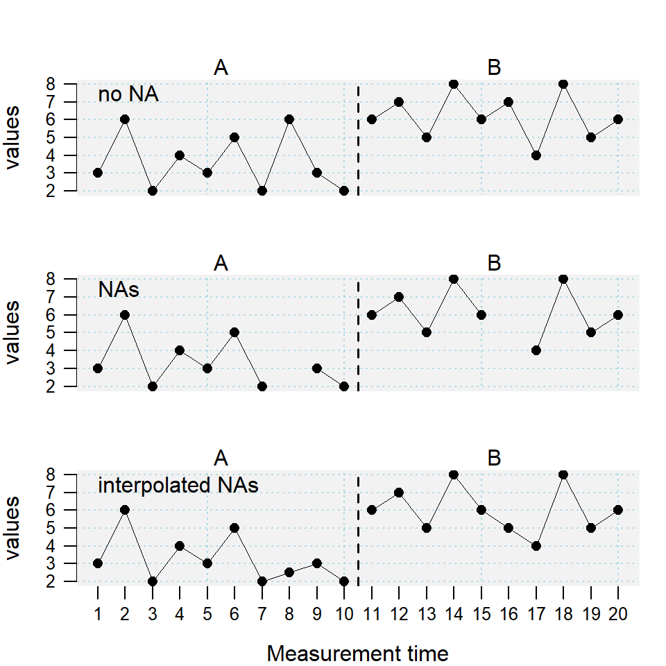
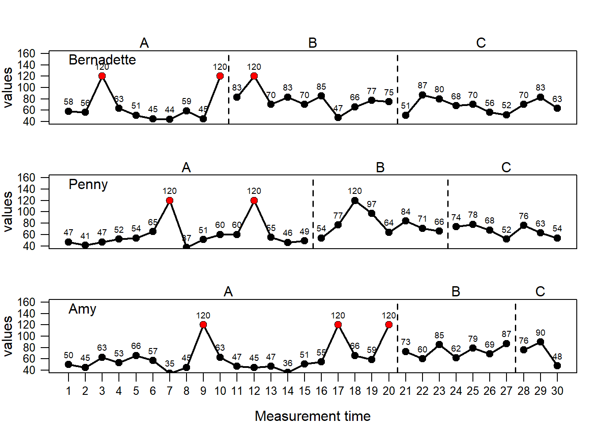
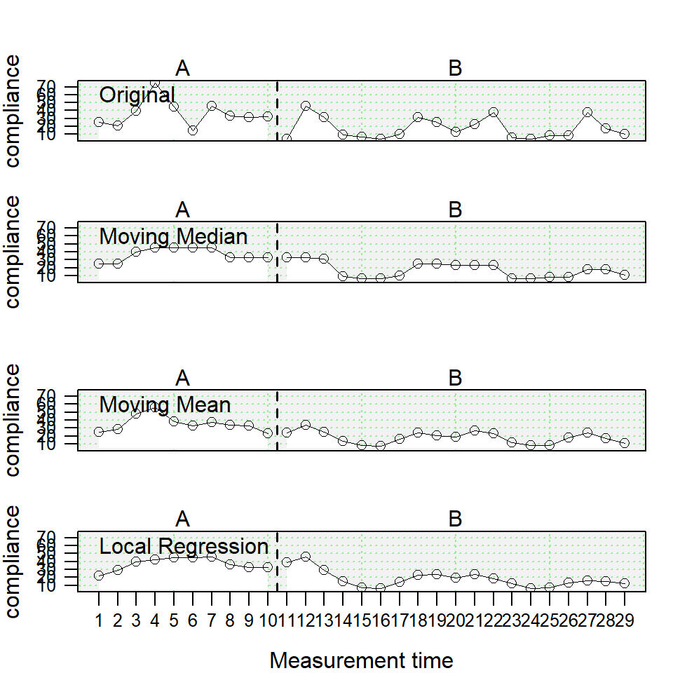

Chapter 6 Describe and manipulate single-case data frames
6.1 Describing and summarizing
A short description of the scdf is provided by the summary command. The results are pretty much self explaining
summary(Huber2014)#A single-case data frame with 4 cases
Measurements Design
Adam 37 A B
Berta 29 A B
Christian 76 A B
David 76 A B
Variable names:
mt <measurement-time variable>
compliance <dependent variable>
phase <phase variable>
Note: Behavioral data (compliance in percent).
Author of data: Christian Huber | describe(data, dvar, pvar, mvar) |
describe is the basic command to get an overview on descriptive statistics. As an argument it only takes the name of the scdf object. For each case of the scdf and each phase within a case descriptive statistics are provided. The output table contains statistical indicators followed by a dot and the name of the phase (e.g., n.A for the number of measurements of phase A).
| Parameter | What it means … |
|---|---|
| n | Number of measurements. |
| mis | Number of missing values. |
| m | Mean values. |
| md | Median of values. |
| sd | Standard deviation of values. |
| mad | Median average deviation of values. |
| min/max | Min and max of values. |
| trend | Slope of a regression line through values by time. |
describe(exampleABC)Describe Single-Case Data
Design: A B C
Marie Rosalind Lise
n.A 10 15 20
n.B 10 8 7
n.C 10 7 3
mis.A 0 0 0
mis.B 0 0 0
mis.C 0 0 0
Marie Rosalind Lise
m.A 52.00 52.27 52.35
m.B 72.10 73.25 73.57
m.C 68.00 66.43 71.33
md.A 53.50 52.00 52.00
md.B 72.50 72.00 73.00
md.C 69.00 68.00 76.00
sd.A 8.29 8.15 10.87
sd.B 11.37 13.13 10.64
sd.C 12.70 10.49 21.39
mad.A 11.12 7.41 10.38
mad.B 10.38 10.38 16.31
mad.C 17.79 11.86 20.76
min.A 39.00 37.00 35.00
min.B 47.00 54.00 60.00
min.C 51.00 52.00 48.00
max.A 63.00 65.00 74.00
max.B 85.00 97.00 87.00
max.C 87.00 78.00 90.00
trend.A -1.92 0.50 -0.09
trend.B -0.61 0.64 1.93
trend.C -0.19 -2.93 -14.00The resulting table could be exported into a csv file to be used in other software (e.g., to inserted in a word processing document). Therefore, first write the results of the describeSC command into an R object and then use the write.csv (or write.csv2 for a German OS system setup) to export the descriptives element of the object.
# write the results into a new R object named `res`
res <- describe(exampleABC)
# create a new file containing the descriptives on your harddrive
write.csv(res$descriptives, file = "descriptive data.csv")The file is written to the currently active working directory. If you are not sure where that is, type getwd() (you can use the setwd() command to define a different working directory. To get further details type help(setwd) into R).
Conflicting function names
Sometimes R packages include the same function names. For example, the describe() function is also part of the psych package. Now, if you have loaded the psych package with library(psych) after scan the describe() function of scan will be masked (describe() would now call the corresponding function of the psych package).
There are two solutions to this problem:
-
activate the
psychlibrary before thescanlibrary (now the psychdescribe()function will be masked) or -
include the package name into the function call with the prefix
scan:::scan::describe().
6.2 Autoregression and trendanalyses
| autocorr(data, dvar, pvar, mvar, lag.max = 3, ...) |
The autocorr function calculates autocorrelations within each phase and across all phases. The lag.max argument defines the lag up to which the autocorrelation will be computed.
autocorr(exampleABC, lag.max = 4)Autocorrelations
case phase lag_1 lag_2 lag_3 lag_4
Marie A 0.29 -0.11 0.10 0.12
Marie B -0.28 -0.10 -0.14 -0.09
Marie C 0.00 -0.33 -0.14 -0.25
Marie all 0.21 0.10 0.25 0.12
Rosalind A 0.37 -0.29 -0.33 -0.34
Rosalind B -0.34 0.24 -0.40 0.04
Rosalind C -0.07 -0.32 0.27 0.02
Rosalind all 0.49 0.38 0.22 0.17
Lise A 0.04 -0.32 -0.05 -0.09
Lise B -0.63 0.50 -0.40 0.31
Lise C -0.38 -0.12 NA NA
Lise all 0.33 0.36 0.23 0.27The trendSC function provides an overview of linear trends in single-case data. By default, it gives you the intercept and slope of a linear and a squared regression of measurement-time on scores. Models are computed separately for each phase and across all phases. For a more advanced application, you can add regression models using the R specific formula class.
# Simple example
trend(exampleABC[1])Trend for each phase
Intercept B Beta
Linear.ALL 55.159 0.612 0.392
Linear.A 60.618 -1.915 -0.700
Linear.B 74.855 -0.612 -0.163
Linear.C 68.873 -0.194 -0.046
Squared.ALL 59.135 0.017 0.330
Squared.A 57.937 -0.208 -0.712
Squared.B 73.217 -0.039 -0.098
Squared.C 68.490 -0.017 -0.038
Note. Measurement-times of phase B start at 0 # Complex example
trend(exampleAB$Johanna, offset = 0,
model = c("Cubic" = values ~ I(mt^3), "Log Time" = values ~ log(mt))
)Trend for each phase
Intercept B Beta
Linear.ALL 50.484 1.787 0.908
Linear.A 54.300 0.100 0.066
Linear.B 61.133 1.625 0.813
Squared.ALL 57.879 0.079 0.871
Squared.A 54.747 -0.013 -0.054
Squared.B 66.343 0.094 0.775
Cubic.ALL 60.886 0.004 0.816
Cubic.A 54.959 -0.008 -0.169
Cubic.B 68.368 0.006 0.732
Log Time.ALL 43.532 12.149 0.848
Log Time.A 54.032 0.593 0.156
Log Time.B 57.300 9.051 0.791
Note. Measurement-times of phase B start at 1 6.3 Missing values
There are two kinds of missing values in single-case data series. First, missings that were explicitly recorded as NA and assigned to a phase and measurement-time as in the following example:
scdf(c(5, 3, 4, 6, 8, 7, 9, 7, NA, 6), phase.design = c(A = 4, B = 6))The second type of missing occurs when there are gaps between measurement-times that are not explicitly coded as in the following example:
scdf(c(5, 3, 4, 6, 8, 7, 9, 7, 6), phase.design = c(A = 4, B = 5),
mt = c(1, 2, 3, 4, 5, 6, 7, 8, 10))In both cases, missing values pose a threat to the internal validity of overlap indices. Randomization tests are more robust against the first type of missing values but are affected by the second type. Regression approaches are less impacted by both types as they take the interval between measurement-times into account.
case1 <- scdf(c(3,6,2,4,3,5,2,6,3,2, 6,7,5,8,6,7,4,8,5,6),
phase.design = c(A = 10, B = 10), name = "no NA")
case2 <- scdf(c(3,6,2,4,3,5,2,NA,3,2, 6,7,5,8,6,NA,4,8,5,6),
phase.design = c(A = 10, B = 10), name = "NAs")
case3 <- fillmissingSC(case2)
names(case3) <- "interpolated NAs"
ex <- c(case1, case2, case3)
plot(ex)
overlap(ex)Overlap Indices
Design: A B
Comparing phase 1 against phase 2
no NA NAs interpolated NAs
PND 40.00 33.33 30.00
PEM 100.00 100.00 100.00
PET 100.00 100.00 100.00
NAP 88.50 91.36 91.50
NAP.rescaled 77.00 82.72 83.00
PAND 72.50 80.56 80.00
TAU_U 0.45 0.51 0.50
Base_Tau 0.59 0.64 0.64
Diff_mean 2.60 2.78 2.75
Diff_trend 0.02 0.11 0.12
SMD 1.65 1.96 2.026.4 Outlieranalysis
| outlier(data, dvar, pvar, mvar, criteria = c("MAD", "3.5")) |
scan provides several methods for analyzing outliers. All of them are implemented in the outliers function. Available methods are the standard deviation, mean average deviation, confidence intervals, and Cook’s distance. The criteria argument takes a vector with two information, the first defines the analyzing method (“SD,” “MAD,” CI“,”Cook“) and the second the criteria. For”SD" the criteria is the number of standard deviations (sd) from the mean of each phase for which a value is not considered to be an outlier. For example, criteria = c("SD",2) would identify every value exceeding two sd above or below the mean as an outlier whereas sd and mean refer to phase of a value. As this might be misleading particularly for small samples Iglewicz and Hoaglin Iglewicz & Hoaglin (1993) recommend the use the much more robust median average deviation (MAD) instead. The MAD is is constructed similar to the sd but uses the median instead of the mean. Multiplying the MAD by 1.4826 approximates the sd in a normal distributed sample. This corrected MAD is applied in the outlier function. A deviation of 3.5 times the corrected MAD from the median is suggested to be an outlier. To use this criterion set criteria = c("MAD", 3.5). criteria = c("CI", 0.95) takes exceeding the 95% confidence interval as the criteria for outliers. The Cook’s distance method for calculation outliers can be applied with a strict AB-phase design. in that case, the Cook’s distance analyses are based on a piecewise-regression model. Most commonly, Cook’s distance exceeding 4/n is used as a criteria. This could be implemented setting `criteria = c(“Cook,”“4/n”).
outlier(exampleABC_outlier, criteria = c("MAD", 3.5))Outlier Analysis for Single-Case Data
Criteria: Exceeds 3.5 Mean Average Deviations
$Bernadette
phase md mad lower upper
1 A 57 9 10.2981 103.7019
2 B 76 7 39.6763 112.3237
3 C 69 12 6.7308 131.2692
$Penny
phase md mad lower upper
1 A 52 6 20.8654 83.1346
2 B 74 10 22.1090 125.8910
3 C 68 8 26.4872 109.5128
$Amy
phase md mad lower upper
1 A 54 9 7.2981 100.7019
2 B 73 11 15.9199 130.0801
3 C 76 14 3.3526 148.6474
Case Bernadette : Dropped 3
Case Penny : Dropped 2
Case Amy : Dropped 3 # Visualizing outliers with the plot function
res <- outlier(exampleABC_outlier, criteria = c("MAD", 3.5))
plot(exampleABC_outlier, marks = res, style = "annotate", ylim = c(40,160))
6.5 Smoothing data
| smooth_cases(data, dvar, mvar, FUN = "movingMedian", intensity = NULL) |
The smooth_cases function provides procedures to smooth single-case data and eliminate noise. A moving average function (mean- or median-based) replaces each data point by the average of the surrounding data points step-by-step. A lag defines the number of measurements before and after the calculation is based on. So a lag-1 will take the average of the proceeding and following value and lag-2 the average of the two proceeding and two following measurements. With a local regression function, each data point is regressed by its surrounding data points. Here, the proportion of measurements surrounding a value is usually defined. So an intensity of 0.2 will take the surrounding 20% of data as the basis for a regression.
The function returns am scdf with smoothed data points.
## Use the three different smoothing functions and compare the results
berta_mmd <- smooth_cases(Huber2014$Berta)
berta_mmn <- smooth_cases(Huber2014$Berta, FUN = "movingMean")
berta_lre <- smooth_cases(Huber2014$Berta, FUN = "localRegression")
new_study <- c(Huber2014$Berta, berta_mmd, berta_mmn, berta_lre)
names(new_study) <- c("Original", "Moving Median", "Moving Mean", "Local Regression")
plot(new_study, style = "grid2")